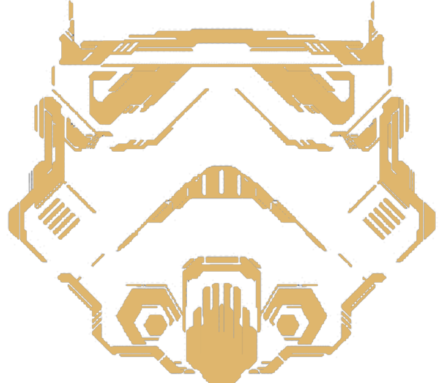
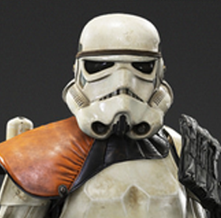
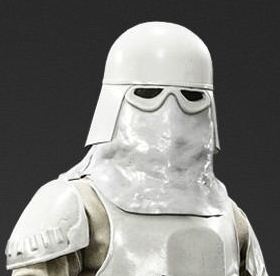
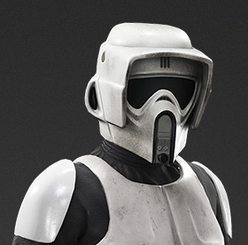
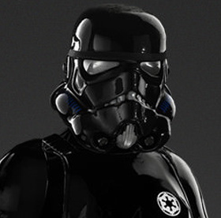
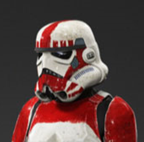
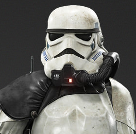
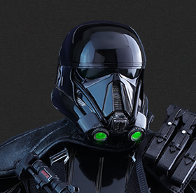
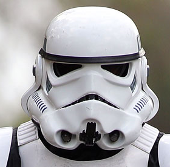

<html>
  <head>
    <meta charset="utf-8">
    <title>Stormtrooper Corps Recruitment</title>
    <link rel="stylesheet" href="css/normalize.css">
    <link rel="stylesheet" href="css/main.css">
    <meta name="viewport" content="width=device-width, initial-scale=1.0">
  </head>
  <body>


     <section class="background-image lite-text">
       <h2 class="accent-text">THE STORMTROOPER CORPS</h2><br>
       
       <h1>Your Galaxy Is<br> In Trouble</h1>
       <p class="dark-text">As we speak, our Galaxy is in danger from a so called “REBEL ALLIANCE” who fear order, they distrucst prosperity and hate progress.</p><br><br>
       <button class="button-enlist-now">Enlist Now</button>
     </section>
    
    <section class="background-medium">
      <h1>The Empire's New Order</h1>
      <h2 class="accent-text">-OUR PATH TO VICTORY-</h2>
      <p>The blueprint for Emperor Palpatine's rule is called the New Order. It is a fitting name for a system that has jettisoned the impracticalities and clutter of the Old Republic.</p><br />
      <p>The New Order is a direct respone to the Old Republic's failures, and a wise correction to it excuesses. Under the New Order, failed "everyone is right" democracies have been replaced by a clear structure, one that is both authoritarian and militaristic. Its tenets are upheld by the Commision for the Presercation of the New Order(COMPNOR).</p><br />
      <p>Under the Empire’s new order, our most cheriesed beliefs will be safeguareded. We will defend our ideals by force of arms. We will give no ground to our enimes and will stand toghter against attacks from withen and without. Let the enimes of the empire take heed: Those who challaenge Imperial Resolve will be crushed.</p><br />
      <br><br><p class="accent-text"><i>-From the text of Emprors Palpatines Inaugural Speech,<br>delivred 16:5:24</i></p><br><br>
    </section>

    <section class="background-white"  id="who">
      <h1>Who Our We</h1>
      <br><br><br>
      <p>We  are the first to go in. We face the enemy when they are strongest. We do not stop until we have achieved our objective. The Imperial Army walks in the path we blaze.<br><br>
We are independent, but we complete joint operations with other branches of the militay service. With the Imperal Navy, we serve aboard there warships and execute boarding operations against hostile vessels. With the imperal Army, we seize starports and take out gun emplacements.<br><br><br>
The Stormtrooper Corps is unconcerned with long-term occupation. We are deoployed when our Emperor requires our service and are recalled when he needs out elsewere.<br><br>
</p><br><br>
   <p class="accent-text"><i>Stormtrooper Corps is only as strong as its soldiers</i></p>
    </section>

     <section class="background-image lite-text" id="history">
   
      <h1>Our History</h1><br><br>
      <hr><br><br>
     <p>
       The Stormtrooper Corps is unparalleled. Do not compre us to the feeble Judical Security forces that existed in the dying decades of the Republic. You must look back nearly 4000 years to the time of Republic rocket-jumpers to find an equivalent corps of elite, first-attack soldiers. Perhaps inspired by the military glories of the previous millennia, our wise Emperor authorized the deployment of millions of Kamino-grown clone troopers to put an end to the Separatist crisis.
    </p><br><br>
     <p>
     They outclassed there ostensible commanders, the Jedi Knights. Under the corrupt political system of the Republic, the clone troopers were forced to take orders from sword-carrying pacifists who had no business play-acting as military tacticians. When the Jedi showed their true colors with an assasination plot agains Supreme Chancellor Palpatine, it was the clone troopers who put down the Jedi uprising.
    </p><br><br>
     <p>
    From those elite, veteran clone troopers, the nucleus of the Emperor’s new Stormtrooper Corps was formed. Under this proud banner, they continued to fight against Separtist holdouts and radicals who resisted the New Order.
    </p><br><br>
     <p>
    Yes, the clone troopers had done their job, but it was a role they’d been bred for. Even more remarkable was the swell of young patriots who volunteered to follow thier example. As the Imperial military expanded, the Stormtrooper Corps diversified. Our Ranks soon included snowtroopers, sandtroopers, scout troopers and more. These brave men and women survied our training crucibles and proved themselves worthy of being called Imperial stormtroopers. Unified under a single cause, behind a common mask, each trooper makes a pledge.
    </p><br><br><br><br>
    <p class="accent-text"><i>I am a stormtrooper. My skin is my armor. My face is my helmet. My name is my number. I am fulfilled, for I am an agent of the Emperor.</i></p>
    </section>

    <section class="background-medium">
      <h1>Training</h1><br><br>
      <hr><br><br>
      <p>Elite stormtrooper cadets carry out their training at the Academy of Carida. The facilities there produce superior stormtrooper officers. Those who survive their years at Cliffside on Cardia earn the right to lead their felllow stormtroopers.</p><br />
      <p>At Cardia, stormtrooper officer canidates undergo:</p><br />
      <ul class="list-style-circle">
        <li>Wilderness survial</li>
        <li>Desert warfare simulation</li>
        <li>Underwater battle tactics</li>
        <li>Experimental weapons testing</li>
        <li>Flash-memory instuction in military history</li>
        <li>Self-discipline through emotional suppression</li>
        <li>Education in the principles of the Emperor's New Order</li>
      </ul><br /><br />
      <p>The Empire's many victories against the forces of rebellion and chaos have inspired common Imperial citizens to ask how they may serve the Emperor. As a result of what they have witnessed on the Imperial NewsNets, may seek to wear polished white armor of the Stormtrooper Corps.</p><br/>
      <p>Only a few succeed. Most fail to meet posted physical requirments. Others wash out during training. Passing the merciles standards of the Stormtrooper Corps is a point of honor for those within our ranks, but the unfit need not despair. The Imperial Army and Navy need recruits too.</p><br/>
      <p>Imperial recruiters actively seek those who desire a career of service and are willin to die for a cause.</p><br/><br /><br />
      <p class="accent-text"><i>We are stormtroopers; we belive in our Emperor</i></p>
    </section>

   <section class="background-white">
      <h1>Roles</h1><br><br>
      <hr><br><br>
     
       <div class="selector">
            <ul class="list-specs">
                <li class="selected"><div><a href="#"></a></div></li>
                <li><div><a href="#"></a></div></li>
                <li><div><a href="#"></a></div></li>
                <li><div><a href="#"></a></div></li>
                <li><div><a href="#"></a></div></li>
                <li><div><a href="#"></a></div></li>
                <li><div><a href="#"></a></div></li>
            </ul>
        </div>
       <div class="hide-scroll-bar"></div>


      <div class="selection">
        <ul class="list-specs-description">
            <li class="not-selected selected">
                <h2>Sandtrooper</h2>
                <p>Stationed on hot dry worlds where storms of sand, ash, or other particulates can clog breathing filters and jam machinery. Equiped with an advanced filter-flush system for steady breathing, plus colling recirculators and polarized helment lenses to eliminate dune glare. Their SD-48 survial backpacks permit them to complete extended missions in unrelenting heat.</p><br />
                <p class="accent-text">Equiptment</p><br>
                <ul class="list-style-circle">
                    <li>Several liters of purified water</li>
                    <li>Miniaturized vaporator</li>
                    <li>Long-range comlink</li>
                    <li>collapseible reflective shelter</li>
                </ul>
                <br />
            </li>
             <li class="not-selected">
                <h2>Snowtrooper</h2>
                <p>Like the name suggests, snowtroopers are trained trained for operation in arctic enviorments. Their insulated armor features an arctic-camouflage white body glove as additional layer of thermal protection. Manual controls for requlating the suits internal systems are located on the breastplate. The lenses of the snowtrooper helmet act as polarized snow goggles, while the faceplate is covered whit a breather hood to reciculate air for warmth and prevent ice from forming in the helment's atmospheric filter.</p><br />
                <p class="accent-text">Equiptment</p><br>
                <ul class="list-style-circle">
                    <li>Portable heater</li>
                    <li>collpsible shelter</li>
                    <li>Spare power packs</li>
                    <li>Homing beacon</li>
                    <li>Comm unit</li>
                    <li>Ion flares</li>
                </ul>
                <br />
            </li>
            <li class="not-selected">
                <h2>Scouttrooper</h2>
                <p>Experts in mobile reconnaissancemtrained inflitrators, and survivalists. They lead patrols to determine the strengh of enemy forces or perform hit-and-fade attacks in support of a larger ground force. Scout trooper armor is lightweight to allow for full range of movement. Their helments incoporate macrobinocular scopes and terrain-following tactical readouts.They are equpied to elmimate targets from a distance.</p><br />
                <p class="accent-text">Equiptment</p><br>
                <ul class="list-style-circle">
                    <li>74-Z speeder</li>
                    <li>Scopped collapsible E-11 blaster rifle</li>
                    <li>Rations</li>
                    <li>Reel of micro-cord and grappling hook</li>
                    <li>shilded comlink</li>
                    <li>Camouflaged shelter</li>
                    <li>Water purification kit</li>
                    <li>Flares</li>
                    <li>R-4 recon droid</li>
                </ul>
                <br />
            </li>
            <li class="not-selected">
                <h2>Shadowtrooper</h2>
                <p>Shadowtroopers are arguably one of the most dangerous soilders ever seen in the Galaxy. They are used for to gather intel in enime bases and are also used as assians. They Stealth themselves to disapper not only from view but radar. They can reappear anywhere, and often ambush in a group.</p><br />
                <p class="accent-text">Equiptment</p><br>
                <ul class="list-style-circle">
                    <li>T-21 Heavey Blaster</li>
                    <li>Flash Grenade</li>
                    <li>Cloaking device</li>
                    <li>Comlink</li>
                    <li>Flares</li>
                </ul>
                <br />
            </li>
             <li class="not-selected">
                <h2>Shocktrooper</h2>
                <p>Reciving special training for deployment in urban enviorments, which gives them a high proficiency in close quarters combat. They serced primarily as security police, and prisoin guards, and acted as peacekeepers. They also perfomed duties such as bodyguards higherups in the Galaactic Empire. They were often outfited with heavy weaponry or riot gear.</p><br />
                <p class="accent-text">Equiptment</p><br>
                <ul class="list-style-circle">
                    <li>DLT-19 Heavy Blasters</li>
                    <li>Smart Rockets</li>
                    <li>Homing Shots</li>
                    <li>Riot Gear</li>
                    <li>Flares</li>
                </ul>
                <br />
            </li>
             <li class="not-selected">
                <h2>Magmatrooper</h2>
                <p>Specially trained to operate in actice geologic vents, magma troopers are deployed to volcanic mines where the collection of rare ores is threatend by Rebel guerillas. The armor of a lava-trooper is reinforced with Duravlex to withstand extream temputures up to 1,900 degrees centigrade.</p><br />
                <p class="accent-text">Equiptment</p><br>
                <ul class="list-style-circle">
                    <li>DLt-19 Heavy Blasters</li>
                    <li>SS-Mobile-tech flmehrowers</li>
                </ul>
                <br />
            </li>
             <li class="not-selected">
                <h2>Deathtrooper</h2>
                <p>Selected from the finest of the Stormtrooper ranks but was not soley based on thier skill but weight and height also accounted for. With the sortest being 6'2 with the largest being 7'4. They require slender builds to move quickly and silently. Physical alterations are then made to their bodies to make them faster,stronger and smarter. Commisned by the Emperor to strike fear. They are exclusive bodyguards to the section of the Empire known as Tarken's initiative who was the purpose of weapons research and development. Great at head-to-head combat but are primary used for steal missions. Their armor contains advanced sensors allowed them to track enimes and allies effectivly. Their armor also interupted trackers which made them practily invisible to sensor rays. Helmets contain voice changers that only other Deathtroopers can comprehend.</p><br />
                <p class="accent-text">Equiptment</p><br>
                <ul class="list-style-circle">
                    <li>Blast-Tec E11 Blaster Rifle</li>
                    <li>SE-14 Repeating blaster pistol</li>
                </ul>
                <br />
            </li>
         </ul>
      </div>

      <br><br><p class="accent-text"><i>Through exceptional traning and extraordinary armor we subdue any enviorment including the dead sea known as space</i></p><br><br>
    </section>

    <section class="background-image lite-text">
      <h1>Benefits</h1><br><br>
      <hr><br><br>
      <h2 class="accent-text left">Salary</h2>
      <p>Every Stormtrooper has the opportunity to live a fullfiling life under the great empire they help defend.  Earning a salary while you train and serve  allows you to become self-sufficent and provide for your family.  After 20 years of active duty serive stormtroopers recive retirement benefits and pensions, which allow retirment at an earlier age then most civillian opertunities. Many retired stormtroopers enjoy full careers after service, knowing they have he financial security of a stormtrooper corps pension.</p><br /><br />
      <h2 class="accent-text left">Health</h2>
      <p>Stormtrooper Corps healthcare coverage keeps all stormtroopers and their family in good health, so they can accomplish their missions. During Service: While serving in the Stormtrooper Corps, every stormtrooper and family will receive a number of health benefits including free comprehensive medical insurance and competitively priced dental insurance. Most bases have medical facilities available to active duty stormtroopers and their family. If there are no medical facilities available on base, stormtroopers are referred to a civilian facility. After Service: If you remain in the stormtrooper Corps through retirement, your medical benefits will extend throughout your lifetime and that of your spouse at reduced rates.</p><br /><br />
      <h2 class="accent-text left">Housing</h2>
      <p>On-base housing builds a secure, community among Stormtrooper families. Stormtroopers with families have the option of living with their families on-base in Military Family Housing. Those who are authorized to live off base will be compensated with a monthly housing allowance. In addition, the Galactic Empire Veterans Administration (GEVA) offers loans for purchasing a home, both during and after service.</p><br /><br />
      <br><br><p class="accent-text"><i>We provide a good life for out troopers and their families</i></p><br><br>
    </section>

      <section class="background-medium">
      <h1>Success Stories</h1><br><br><br>
      <hr><br><br>
        <div class="slider">
            <div class="items">
                <div class="item selected"><h2>TK541</h2><p>Prior to the marines corpse TK541 worked as a janitor on Corellian. Now he a LT CMDR leading his fellow stormtroopers and enjoying new challanges every day and is loved by the stormtroopers he commands.</p></div>
                <div class="item"><h2>QE218</h2><p>QE218 is a Family man.He found the love of his life , a fellow stormtrooper and had a child. He now works hard to keep the galaxy safe not only for his wife and daghter but for all imperial citizens.</p></div>
                <div class="item"><h2>DS101</h2><p>DS101 first stationed on the Star Destroyer "Adamant", visted a viriaty of planets and learned alot of diffrent cultures. He is now exploring the unkown regions.</p></div>
            </div>
            <br>
           <div class="buttons">
                <button class="button-left"><</button>
                <button class="button-left">></button>
            </div>
      </div>
      <br><br><p class="accent-text"><i>We provide troopers evertying they need to succed</i></p><br><br>
      </section>
      
      <section class="background-white enlist-now">
      <h1>Enlist Now</h1><br><br>
      <hr><br><br>
      <form>
        Name:<br>
        <input type="text" name="firstname"><br>
        System:<br>
        <input type="text" name="lastname">
      </form> <br>
      <button>Submit</button><br>
      <h2>Or</h2>
      <p>Find your nearest Imperial Recruiter</p>
      <br><br><p class="accent-text"><i>We thank you for your service and keeping the Galaxy a safe and secure place to live.</i></p><br><br>
      </section>

      <script src="https://ajax.aspnetcdn.com/ajax/jQuery/jquery-3.1.1.min.js"></script>
      <script src="src/main.js"></script>

  </body>
</html>
